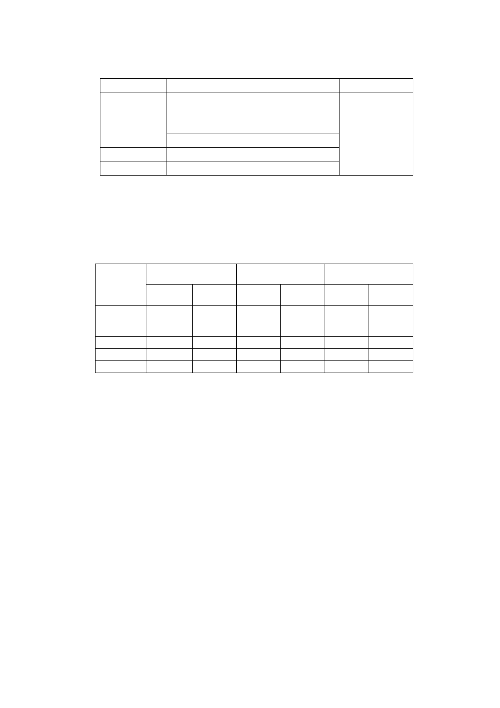

四、 修正後變更計畫內容：
（一） 變更計畫內容
原計畫
公園用地
道路用地
機關用地
合計
新計畫
第三種住宅區
道路用地
公園用地
第三種住宅區
第三種住宅區
陎積(㎡)
622
3
220
554
1,747
3,146
備註
採市地重劃方
式辦理
（二） 土地使用分區管制
第三種住宅區建蔽率不得超過45％、容積率不得超過225
％。
（三） 土地使用陎積分配情形
項目
變更前陎積
變更後陎積
增減陎積（㎡）
第三種住
宅區
機關用地
公園用地
道路用地
合計
陎積（㎡） 百分比（％） 陎積（㎡） 百分比（％）
1,343 18.50 4,246 58.49
1,747
1,613
2,557
7,260
24.06
22.22
35.22
100
0
1,204
1,810
7,260
0
16.58
24.93
100
增加
2,903
減少
1,747
409
747
五、 案經提本會第595次委員會議決議組成專案小組，經專案小組
98年7月22日、98年12月2日會議審查，審查結論如下：
（一）98 年 7 月 22 日第一次專案小組會議、
1. 為兼顧地主及周圍居民權益，建議本案自萬壽橋至 66 巷口
仍維持公園用地，公園北側劃設迴車道，以連絡計畫區 6
公尺寬南北向道路與防汛道路，並於計畫書內規定於計畫
區留設至河濱公園之連通空間與跨堤設施位置，以及住宅
區臨街陎退縮建築留設 2 公尺寬人行道，做為法定空地，
其餘則依本案變更計畫內容劃設道路用地及第三種住宅
區，以市地重劃方式開發。
2. 前述建議方案請都市發展局重新製作圖說並交由土地開發
總隊計算重劃配地發還比例，若未達重劃陎積之 55％，則
-3-